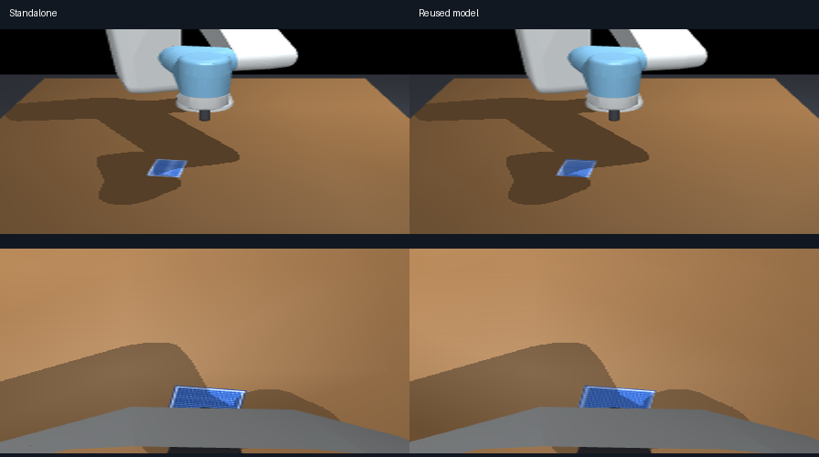

Why seed 42 reaches the card and seeds 0/1 miss
Development record from 16 October 2026. Read the current results for the project status. References marked local artifact identify files in the original workspace; they are not included in this site.
Investigation on 2026-10-16, after removal of RGB centering and scripted lifting. All new episodes use unassisted frozen pi0.5, 20 seconds / 400 commands / 80 CUDA calls, and unchanged weights. The default profile is suction_upright; an explicitly labelled adapter ablation is described below. No card pose enters policy/control. Card positions, segmentation visibility counts and success measurements below are offline evaluator data.
The difference cannot be certified as ordinary seed variance alone. A real graphics-startup regression changed the camera pixels in shared-model batches. Fixing it restores seed 42's contact, but seeds 0/1 still miss. Separating scene and sampling seeds shows substantial sensitivity to both. A broader CUDA/JAX comparison also fails the declared numerical tolerance for seed 0. There are no seed-conditioned camera/controller/policy settings, but earlier adapter development used seed 42, so global hyperparameter overfitting remains a limitation. Contact on that seed is not evidence of general card-manipulation competence.
Seed-42 regression check
The current code still reaches the card. A new scene/noise seed-42 episode reproduced the earlier unassisted run's 0.52049 mm closest tool-tip distance and 813 contact physics steps = 1.626 seconds. Neither run achieved a valid seal or pickup; the earlier edge-overhang failure remains.
The resolved camera/control profile and all initial inputs match. The first 21 observation/action chunks and 105 executed commands (5.25 simulated seconds) match exactly, including the approach and initial card contact at about 3.3 seconds. This directly contradicts the hypothesis that removing the auxiliary controllers prevented seed 42 from approaching.
Artifacts: new run (runs/pi05_seed42_regression_check/results.json; local artifact), diagnostics (runs/pi05_seed42_regression_check/diagnostics.json; local artifact), 20-second dashboard (runs/pi05_seed42_regression_check/episode_dashboard.mp4; local artifact), chunk comparison (runs/seed_diagnosis/seed42_comparison.json; local artifact).
Source audit
The original upright run predates full source snapshots, so the oldest nearby archived full snapshot (runs/rgb_scenarios/dim/source) was also compared with the current rerun's snapshot. This is a limitation of the source audit; the exact recorded input/action/trajectory comparison above supplies the direct behavioral check against the original run.
pi05_policy.pyis byte-identical to that archive.- Every retained
CardSimfunction has the same AST; the sole removal is the unused hybrid seal-switch property. - Runner changes remove auxiliary branches, permit reuse of an already loaded policy, and adjust reporting/video labels. Raw actions still go directly to the same bounded adapter.
- The scenario change repairs mass-variant state preservation, and is not executed for these baseline episodes.
- Camera poses, image mirroring, action scales/limits, ten denoising steps, five-action execution schedule and 8° table-normal guard match the original recorded profile.
Function-level audit and file diffs (runs/seed_diagnosis/source_audit.json; local artifact). No weight values were inspected during diagnosis beyond ordinary inference loading.
Actual rendering regression and fix
The original standalone runner renders its first observation before importing Torch. The new shared-model batch runner loaded the CUDA model first. On this hybrid laptop, even importing Torch before the first OpenGL context changes the selected OpenGL adapter: standalone used Intel Arc Pro, while the initial shared-model batches used NVIDIA RTX 4070. Policy inference ran on RTX 4070 in both cases.
For the identical initial seed-42 scene, this changed 36,785 external-camera channel values and 105,733 wrist-camera channel values. Mean absolute RGB differences were 0.418 and 2.608; maximum differences were 67 and 112. The first action chunk changed by up to 0.08546. A shared-model scene/noise-42 repeat on the NVIDIA renderer missed by 11.25 mm instead of contacting the card. The same MuJoCo model, physical state and camera poses, fresh contexts, and reversed load order isolated the graphics adapter change. One solver scratch array (efc_AR_rownnz) varied in some load-order checks; the repeat-reset audit found no model/data-array differences. See graphics-first experiment, policy-first experiment, reset/context audit (runs/seed_diagnosis/render_audit/results.json; local artifact), and input comparison (runs/seed_diagnosis/reused_model_comparison.json; local artifact).

render_runtime.graphics_before_cuda() now establishes and retains a tiny OpenGL context before importing Torch in the batch runner and seed-audit tools. Episodes record the actual GL vendor/renderer/version. This fixes the known batch startup order; external callers that import Torch first can still select another adapter, which the metadata will expose. No global Windows GPU preference was changed.
The controlled rerun uses Intel rendering, RTX 4070 policy inference and identical settings for all three seeds:
| Scene / sampling seed | Closest tool-tip distance | Physical contact | Attachments | Successful pickup |
|---|---|---|---|---|
| 0 / 0 | 211.246 mm | 0 s | 0 | No |
| 1 / 1 | 233.422 mm | 0 s | 0 | No |
| 42 / 42 | 0.498 mm | 0.874 s | 0 | No |
Controlled batch summary. The qualitative seed contrast survives this correction. The initial batch results and the first crossed experiment mixed renderer paths and must not be used as a clean scene-versus-noise comparison. They remain archived for diagnosis.
Two different meanings of seed
Previously --seed N changed both card XY/yaw and the flow policy's initial Gaussian noise. The contrast between seed 42 and seeds 0/1 therefore confounded a different scene with a different stochastic action trajectory.
The new optional --policy-noise-seed separates local CUDA sampling from the scene seed. Omitting it preserves the prior behavior. Example:
python run_policy.py --seconds 20 --seed 0 --policy-noise-seed 42 --output-dir runs/scene0_noise42
This change affects experiment seeding only. It adds no observation, controller, target estimator or scripted motion.
Nine fixed-initial-input probes (three scenes × three noise seeds) reproduced all three originally saved diagonal first-action chunks exactly, including seeds 0 and 1 after shared-model use. A second check using the three rendering-consistent saved inputs also reproduced every first action chunk exactly after shared-model use: model-reuse checks (runs/seed_diagnosis/adapter_audit/initial_model_reuse_checks.json; local artifact). These fixed-input checks give no evidence of a stale model cache causing the startup contrast. The original nine-probe inputs mixed rendering paths, so their scene-to-scene comparison is not a clean graphics-controlled experiment.
On the same seed-42 image, mean first-five XYZ action outputs were:
| Sampling seed | X | Y | Z |
|---|---|---|---|
| 0 | -0.1754 | +0.0044 | -0.5833 |
| 1 | -0.0456 | +0.3416 | +0.0197 |
| 42 | +0.2115 | +0.5970 | +0.1089 |
These are normalized relative commands before the same bounded adapter. In particular, sampling seed 0 commands substantial initial descent, whereas seed 42 initially rises. Sampling is therefore a material behavior change, not a cosmetic random label. All initial-input probes (runs/seed_diagnosis/initial_input_probes.json; local artifact).
Visible targets, wrong approach
| Scene | Initial card Y relative to TCP | Initial external / wrist card pixels | Positive-Y commands in first 3 s | Median requested/actual translation cosine |
|---|---|---|---|---|
| 0 | -91.81 mm | 314 / 1,108 | 81.7% | 0.992 |
| 1 | -71.17 mm | 379 / 1,107 | 95.0% | 0.971 |
| 42 | +71.72 mm | 333 / 873 | 61.7% | 0.957 |
The external camera contains the card in every recorded observation for all three original episodes. Cards in scenes 0 and 1 are not smaller or absent in the initial inputs. The robot follows the requested motion reasonably well, while the policy often steers to the opposite Y side from those targets. Their lowest requested TCP heights were 73.76 and 64.38 mm; neither approached the card surface. Seed 42 requests descent to the table and reaches physical contact.
These measurements are from the original mixed-renderer comparison and are descriptive, not a causal isolation of seed effects. They show the missed cards were visible and that the robot followed commands directed away from them. The rendering-consistent rerun confirms the qualitative misses. This points to approach/visual grounding and stochastic trajectory selection, before suction attachment is relevant. It does not prove what object the model attends to. Franka/gripper-to-UR7e/suction transfer and an unfamiliar card scene remain plausible contributors, not isolated causal proofs. Trajectory/visibility audit (runs/seed_diagnosis/trajectory_audit.json; local artifact).
Seed-conditioned code versus tuning on one seed
These are different concerns. The static/reset contract audit checked seeds 0, 1, 42, 2, 3, 4 and 5 under both compared profiles. All MuJoCo model arrays, initial robot joints, camera extrinsics and resolved controller settings are identical across seeds within a profile. Source inspection found no seed-specific policy, camera or physics branch; the scene seed changes card XY/yaw, while the sampling seed changes flow noise. There is no special-case rule for seed 42.
However, the earlier six adapter experiments all used seed 42. Image-axis conversion and camera extrinsics have independent upstream/framebuffer checks, but the 15 mm / 0.10 rad caps and eight-degree upright guard are task adaptations, not validated checkpoint-equivalent settings. Uniformly applying settings chosen on one seed does not establish generalization.
To test that concern, a plan fixed before new ablation outcomes holds cameras, weights, normalizers, instruction, robot start, physics, suction gates, 20 Hz control and replanning constant. It compares:
- A,
suction_upright: the existing default, unchanged during the comparison. - B,
reference_scale_audit: no upright guard and no extra Cartesian norm clipping beyond the reference per-axis scales of 50 mm / 0.5 rad. The same 0.12 rad joint-target slew, workspace, joint and actuator limits remain. This is an adapter ablation, not a complete reproduction of Franka operational-space dynamics.
No profile is selected separately for a seed, and no winning seed is substituted for a failed trial. Four additional consecutive development scene seeds, 2–5, were declared before their new policy outcomes were observed. They are not the specification's reserved held-out evaluation.
Rendering-consistent crossed runs and the ablation give:
| Profile | Scene | Sampling seed | Closest distance | Contact | Maximum valid hold |
|---|---|---|---|---|---|
| A | 0 | 42 | 234.958 mm | 0 s | 0 s |
| A | 1 | 42 | 233.422 mm | 0 s | 0 s |
| A | 42 | 0 | 0.591 mm | 4.336 s | 0.222 s |
| A | 42 | 1 | 160.530 mm | 0 s | 0 s |
| B | 0 | 42 | 234.958 mm | 0 s | 0 s |
| B | 1 | 42 | 233.422 mm | 0 s | 0 s |
| B | 42 | 42 | 200.617 mm | 0 s | 0 s |
Holding noise 42 fixed does not rescue scenes 0/1. Holding scene 42 fixed gives contact/lift with noise 0 and a complete miss with noise 1. Removing the two task adaptations together also turns scene/noise 42 into a miss, without helping 0/1. This shows adapter dependence and strong stochastic sensitivity; it does not isolate which removed adaptation caused the changed behavior, or prove that earlier tuning was seed-independent in its benefit. The default remains explicitly experimental.
A partial learned pickup, not task success: scene 42 / noise 0 forms six physical-gated suction attachments, first at 3.946 s, and reaches 67.47 mm maximum card clearance. The card remains above 50 mm while attached for only 0.222 continuous seconds, versus the required two seconds. The policy releases repeatedly, and one attachment breaks at the configured holding limit. There is no vacuum latch, scripted lift or auxiliary action correction. Results/events (runs/seed_diagnosis/adapter_audit/suction_upright/scene_42_noise_0/results.json; local artifact), physics diagnostics (runs/seed_diagnosis/adapter_audit/suction_upright/scene_42_noise_0/diagnostics.json; local artifact), dashboard video (runs/seed_diagnosis/adapter_audit/suction_upright/scene_42_noise_0/episode_dashboard.mp4; local artifact).
The four additional development scenes, all using profile A and sampling seed 42, gave:
| Scene seed | Closest distance | Contact | Attachments | Successful pickup |
|---|---|---|---|---|
| 2 | 3.713 mm | 0 s | 0 | No |
| 3 | 169.659 mm | 0 s | 0 | No |
| 4 | 107.156 mm | 0 s | 0 | No |
| 5 | 229.652 mm | 0 s | 0 | No |
All 14 rendering-consistent episodes failed the full pickup criterion. Their outcomes are retained in controlled batch results and adapter audit results. The extra scenes show that reaching/contact on seed 42 is not representative of these development examples. This is not an unbiased success-rate estimate or proof that each adapter setting is harmful elsewhere: profiles were not compared on a complete scene × noise grid, and the two ablated restrictions were changed together.
Reproduce the planned audit with python tools/audit_policy_adaptation.py --output-dir runs/my_adapter_audit in a fresh process. tools/diagnose_seeds.py now uses graphics-first initialization and a separate output directory (also selectable with --output-dir); its original pre-fix source is archived as runs/seed_diagnosis/diagnose_seeds_used.py. Neither tool uses evaluator state to guide actions. Future episode snapshots also retain CUDA construction/loading code and scene/runtime/profile assets, addressing the incomplete provenance of older episodes.
Frozen CUDA policy versus original JAX inference
The earlier GPU conversion check used one legacy input. This audit compares three rendering-consistent initial observations with the original JAX CPU checkpoint, identical saved Gaussian flow noise, the same ten denoising steps and original transforms/normalizers. It performs inference only. The declared limits (runs/seed_diagnosis/policy_parity/plan.json; local artifact), fixed before reference outcomes, were relative L2 below 2%, maximum XYZ difference below 1 mm after reference scaling, and matching gripper signs for the five actions actually executed.
| Scene / noise seed | Full-chunk relative L2 difference* | Maximum XYZ difference before adapter limits | Executed gripper signs equal | Declared check |
|---|---|---|---|---|
| 0 / 0 | 43.065% | 1.537 mm | Yes | Fail |
| 1 / 1 | 0.728% | 0.534 mm | Yes | Pass |
| 42 / 42 | 0.457% | 0.230 mm | Yes | Pass |
*The original comparison normalizes by the saved CUDA chunk's norm. Full reference results, comparison tool (tools/check_policy_parity.py; local artifact).
Seed 0's large full-chunk error is dominated by action index 5's gripper prediction: JAX gives -0.9930, CUDA +0.5831. Index 5 is discarded when replanning after five commands, so this particular sign difference did not drive the recorded episode. The first five actions have 1.827% relative L2 difference and identical gripper signs, but up to 1.164 mm XYZ difference before adapter limits. It would be incorrect either to describe the full policy as numerically equivalent or to claim that the discarded gripper difference explains the 211 mm miss. Full CPU-versus-GPU closed-loop equivalence was not tested.
Inspection of the inference source found a relevant upstream arithmetic difference: JAX Gemma attention requests float32 query/key logits, whereas PyTorch eager attention rounds its bf16 matrix-product result before float32 softmax. A diagnostic-only process repeated all three saved CUDA chunks exactly (maximum error zero), then compared float32-logit attention with scaling before or after the dot product. Both variants produced identical outputs here; the head's scale is exactly representable.
For seed 0 this reduced full-chunk relative error against the JAX reference from 42.23% to 13.67% (this second audit normalizes by JAX), restored all ten gripper signs, and reduced the first-five XYZ maximum from 1.164 to 0.947 mm. Seed 1 became less close (full-chunk relative error 0.727% to 1.131%); seed 42 changed from 0.456% to 0.477%. Thus attention arithmetic explains part of the discrepancy, but this experiment does not isolate every numerical difference or validate a universal replacement. No default attention function, model weights or global dependency files were changed. The diagnostic monkeypatch exists only inside the audit tool (tools/audit_attention_numerics.py; local artifact) and is restored before that process exits. All nine probe outcomes and saved outputs.
This cross-input check limits the earlier single-input GPU validation: there is no seed-specific code branch, but numerical agreement is input/noise dependent. Backend arithmetic remains a possible contributor to later closed-loop differences. It has not been shown to cause the observed seed contrast by itself.
A separate reproducibility sensitivity
After the original and current seed-42 trajectories match for 5.25 seconds, one external-camera pixel at row 147, column 95 differs: RGB [126,123,132] versus [116,112,119]. Wrist image, proprioception and instruction still match at that point. Reconstructing the exact flow noise reproduced each saved action chunk with zero error; changing only this input pixel changes the output by up to 0.0063673. Later feedback amplifies the trajectory difference to a maximum 131 mm in one TCP coordinate.
Thus exact whole-episode pixel/trajectory reproducibility cannot be assumed. The root cause of the isolated rendered-pixel variation is not established. It occurs after the approach and contact already match, so it does not explain the seed-0/1 versus seed-42 failure contrast. Fixed-noise pixel sensitivity.
Interpretation and limits
- A source change did introduce a renderer-order confound in batches; it has been corrected and recorded explicitly. Removing RGB centering/scripted lift did not prevent the original seed-42 approach from being reproduced.
- The initial seed comparison changed card placement and stochastic policy noise together. Controlled experiments show that both matter. Visible cards, functioning scripted mechanics and reasonable tracking do not guarantee correct learned approach.
- No seed-conditioned policy/scene optimization was found. This is weaker than proving that globally chosen settings help arbitrary seeds. The adapter ablation and extra development seeds do not justify a claim of robust generalization, nor a statistical assertion that the contrast is harmless or typical variance.
- CUDA/JAX parity is not uniformly within the declared tolerance. The attention ablation improves one input without consistently improving the others; it remains diagnostic and has not been promoted into the default policy.
- Every comparison retains the same frozen weights, normalizers and instruction, with no training, card-pose targeting, per-seed tuning, auxiliary centering or prescribed lift. The original policy's task success criterion remains unchanged: physical attachment and at least 50 mm lowest-point clearance for two continuous seconds.
- The default is retained as an experimental adapter, not promoted as a validated improvement across placements. Future comparisons should declare independent scene and sampling seeds, keep the actual renderer fixed, compare configurations on the same seed grid, and reserve untouched seeds before selecting settings.
Recorded evidence and verification
20-second four-panel comparison: scenes/noise 0/0, 1/1, 42/42, and 42/0. All use the same default adapter, graphics backend and frozen GPU model. The last panel contains the brief physical-gated lift; none meets the full task criterion.
Verification report covers all 14 controlled episodes, 5,600 neural commands, 1,120 inference calls and 140,000 physics steps. Every recorded raw adapter input equals its saved policy action, every vacuum command equals the raw gripper sign, all model parameters are on cuda:0, all recorded renderers match, and every raw episode video has 400 frames at 20 fps. No auxiliary controller or ground-truth control is recorded. Runtime/audit sources compile; the numerical parity check explicitly has one failure, as reported above.